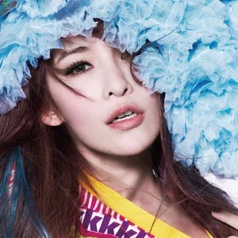

同一颜色源，三种处理：① 原始色（提取桶平均，未调校）·
② HSL 手调（现行 mockup tuneTheme：饱和度收 0.5~0.75、明度收 0.4~0.6 + 色相感知偏置表）·
③ OKLCH 感知钳制（Monet/HCT 思路的 CSS 原生实现——相对颜色语法直接钳
Tone L 0.40~0.62、Chroma C 0.07~0.15，感知均匀空间，无需偏置表）。
盘面用与 mockup 相同的 conic 漩涡配方渲染，明暗两主题下各看一遍。
